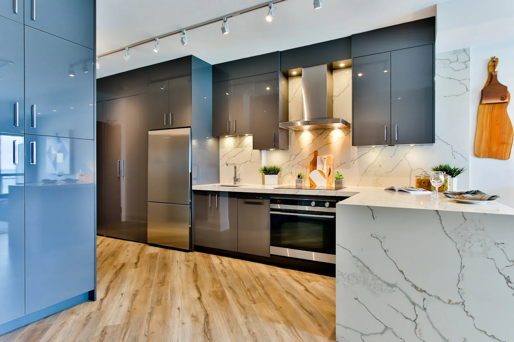
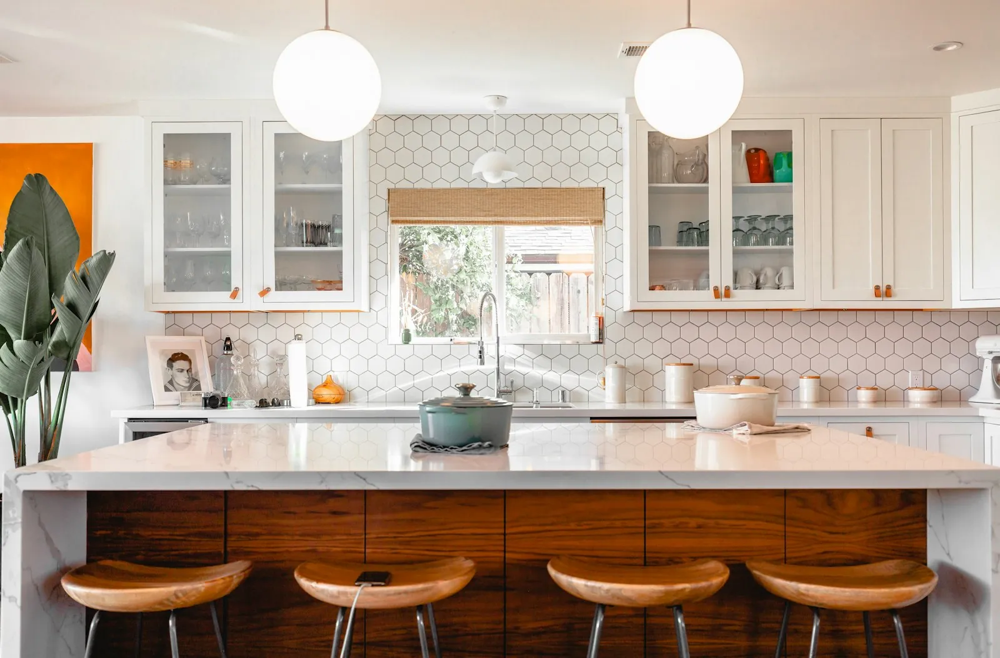
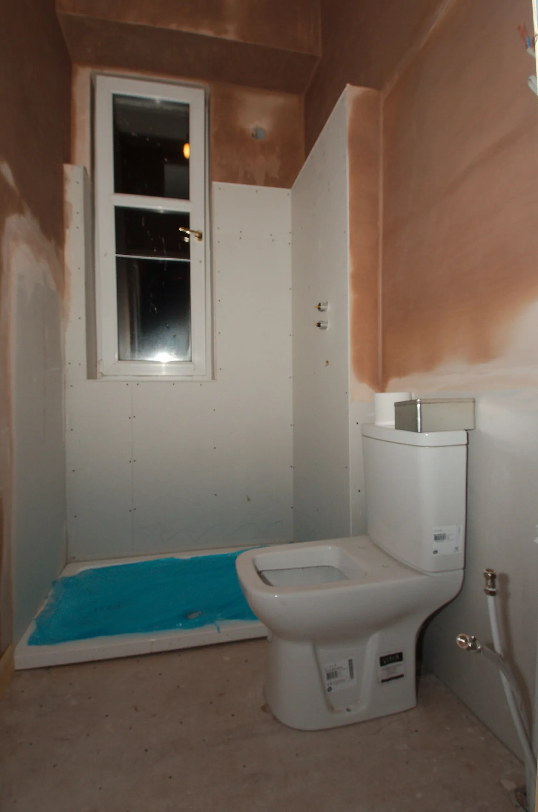

The three honest levels
Bathroom budgets in century homes blow up for one reason: owners price the room like a new-build bath and forget the room is bolted to a 70–100-year-old plumbing system. Level the work first — the range below is for a typical 5×8 to 6×9 room, US mid-market 2025–26:
| Level | 2025–26 cost | What it includes |
|---|---|---|
| Refresh | $4,000 – $7,000 | Refinish the original cast-iron tub, replate brass fixtures, new faucets, tile regrout & repair, paint, new vanity top. Plumbing untouched. |
| Renovation | $9,000 – $15,000 | Above plus re-tiling the wet wall, new vanity & medicine cabinet, upgraded fixtures, one relocated supply line if needed. |
| Recreation | $18,000 – $25,000 | Full re-layout: moving the tub/toilet, new floor & wall tile throughout, all-new plumbing rough-in behind finished walls. |
The level you choose should follow the plumbing, not the mood board. If the supply lines are galvanized, the toilet flange is cracked, or the drain is cast-iron with root intrusion, the room has already chosen its level for you (see checks 1 and 5 of the pre-purchase guide).
The plumbing reality check
- Galvanized supply: rusting from the inside out — a room-level repipe runs $1,800–$4,000; part of a full repipe is $4,800–$12,000. If the walls are open anyway, do it now.
- Vintage pipe diameters: ½" supply and 1½" drains were standard. New fixtures assume modern flow; a 1950s lavatory on a 1¼" trap arm can gurgle forever. Plan fixture choice around existing lines.
- The flange lottery: unreachable toilet flanges are the #1 bathroom surprise — a $40 flange becomes a $900 subfloor patch when it's rotted and buried in a 1920s slab. Check it before tiling around it.
- Venting: old baths often share one vent line with the kitchen. Adding a fixture without verifying vent capacity is how bathrooms smell like sewers by year two.
Why the vintage-fixture route wins
The restore-first answer to "what do I do with these ugly old fixtures?" is usually: keep them. The economics are unambiguous:
- Reglazing an original tub: $400–$700 vs. $1,800–$3,200 for a new one installed — and the original is heavier cast iron with a far better enamel.
- Replating brass: $150–$400 per fixture vs. $250–$600 for "vintage-style" reproductions that read as reproductions.
- Salvage fixtures: pedestal sinks and chain pulls at architectural salvage yards run 30–60% of new — see the sourcing note in the floor guide for the six hunting grounds.
- Period tile salvage: matching original subway or hexagonal tile in the same glaze is often possible from demolition dealers — for the patches, not the whole room.
The one exception: 1960s–70s "renovated" baths where the original fixture set is already gone — then salvage replaces new, and the room becomes a matchmaking exercise, not a restoration.
A bathroom on century plumbing is a plumbing project with a tile problem, not a tile project with a plumbing problem.— Chapter 02, The 30-Minute Audit
What's not worth the money
- Moving the toilet "because we're in here anyway." On a slab or with cast-iron drains, relocating the toilet adds $2,500–$5,000 and touches the sewer line. Unless the layout is genuinely broken, keep the drain locations.
- Heated floors in a refresh. $1,200–$2,500 — lovely, but it's a renovation-level decision. In a refresh it eats the whole budget.
- Whole-room new tile "to match the new era." Old bathrooms are small; patched original tile reads as honest history, while a full re-tile of a 60 sq ft room ($3,500–$6,500) is the fastest way to turn a refresh into a renovation.
- Demoing sound plaster behind the tile. The tile comes off; the plaster behind it usually doesn't (see mistake 02 in the mistakes guide).
The 7% rule for bathroom scheduling
Whatever level you land on, the bathroom belongs early in the 90-day sequence — before the bedroom walls close, because the bath's vent and supply lines run through them. The Kit's sequence chapter slots the bathroom at days 30–50 specifically so the plumbing work happens in the same open-wall pass as the rest of the MEP.
The fixture aging guide: keep, replate, or replace
Century bathrooms carry a three-tier fixture inventory, and the tiers price differently:
- Keep: original cast-iron tubs (reglaze at $400鈥?700), pedestal sinks (clean, re-seat, new traps), and solid-brass valves that still turn. These read as the house furniture, and they cost a tenth of what new equivalents run.
- Replate: brass and chrome finishes roughly 40鈥?0 years old. Replating runs $150鈥?400 per fixture and returns them to better-than-new condition 鈥?versus $250鈥?600 for reproductions that read as reproductions. The rule: replate anything with a solid base metal; replace only what is pitted through.
- Replace: cracked vitreous china, toilets from before 1980 (rebuild cost exceeds replacement), and anything the plumbing code no longer allows (some chain-pull shower valves qualify). Replacements should be era-appropriate salvaged units at 30鈥?0% of new reproduction price.
One caution from the survey: owners who replaced "while we were in there anyway" spent an average of $4,300 more than owners who kept the salvageable set 鈥?and most of the replacements did not photograph better. The aging guide is short, and it saves a real line item.
The permit reality by scope level
Bathroom work sits on the edge of permit thresholds more than any other room, because it touches supply lines, drains, and sometimes structure in the same project. The 2025–26 pattern across the tracked cases:
- Refresh — no permit. Reglazing, replating, regrouting, and fixture swaps that reuse existing rough-in positions almost never trigger a permit. This is why the $4k–$7k refresh is also the legally quietest level.
- Renovation — plumbing permit. Relocating any supply line, changing drain routing, or adding a fixture requires a permit with an inspection in most jurisdictions. Count on $120–$450 in fees and one inspection visit, and pull it before the tile goes up.
- Recreation — plumbing plus, sometimes structural. Moving the toilet or tub can touch the vent stack and floor joists; an electrical relocate adds an electrical permit. Jurisdictions with old-house overlay districts may add review time — the permit history pull in the pre-purchase guide tells you about those before you plan.
The practical takeaway: the difference between the refresh and the renovation is not just money — it is an inspection two weeks before you thought you were done. Plan the permit into the 90-day sequence at the same week you order materials, and the inspection lines up with the finish instead of stalling it.
Bathroom sequencing inside the 90-day plan
The bathroom price is half of the story; the other half is when it happens. Century-home plumbing runs feed more than the bath — the supply and vent lines travel through bedroom walls and the kitchen ceiling, which is why the Kit places the bathroom at days 30–50 of the sequence, inside the open-wall pass of the MEP work:
- Days 30–35, the rough-in: supply re-runs, drain repairs, vent verification, and any fixture relocation happen while the walls behind the bath are still open. This is the single biggest schedule lever in the room — the $31k architectural spec relies on it.
- Days 35–42, the wet set: tub, tile, and waterproofing go in before the bedroom walls close, so the plumbing is tested with the floor open. A leak discovered here is a grout-line repair; a leak discovered after the tub surround went in is a demolition.
- Days 42–50, the fixtures: vanity, toilet, hardware, and the replated brass land after the tile has cured. Fixture installation is the most DIY-able point in the room — the trade-off table marks it a strong yes — but only if the rough-in was signed off by the inspector first.
The two warnings from the tracked cases: never order tile before the rough-in inspection (heights change), and never let the plumber close the ceiling until the toilet flange is verified at final grade. Both are one-visit fixes in the sequence and two-visit problems outside it.

Frequently asked questions
Done professionally (bake-cured, not DIY kits), a reglazed tub carries 10–15 years of normal use — the same lifespan as many "lifetime" new tubs' warranty periods. The catch is prep: the original enamel must be acid-etched properly. A $500 reglaze on cast iron beats a $2,500 replacement on every axis.
Then the restore-first rule shifts to salvage-first: source era-appropriate fixtures from the six hunting grounds (salvage yards, estate sales, demolition dealers, eBay estate sellers, auction houses, and period re-producers) at 30–60% of new reproduction cost. The room can still read as "of the house" rather than "of the 80s."
Materials $3–$8/sq ft (ceramic/porcelain), labor $6–$14/sq ft installed in most mid-markets — a 60 sq ft bath floor plus a wet wall runs $1,800–$3,800 total. The tile is rarely the budget problem in an old bath; the plumbing behind it almost always is.
Usually no for a refresh that touches no plumbing or electrical. A renovation with relocated supply lines needs a plumbing permit; a recreation with a moved toilet needs plumbing + sometimes structural. Pull the permit history first (check 9, pre-purchase) — un-permitted work from previous owners is the real trap.
Only when it is a refresh hiding a renovation: if the supply lines are galvanized or the flange is rotten, a $5k refresh becomes a $15k job with the walls already painted. Run the audit plumbing checks before choosing the level 鈥?the room systems decide, not the mood board.